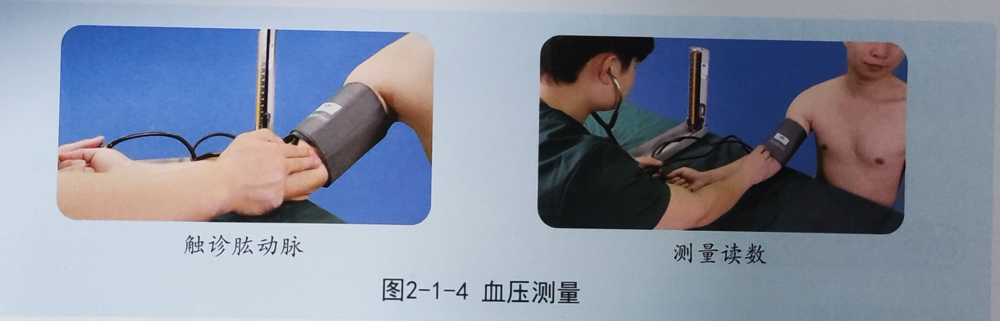
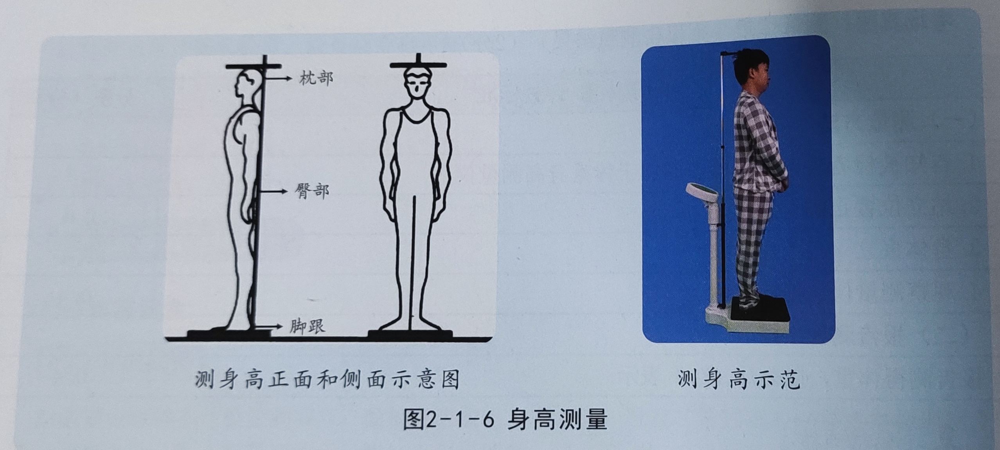
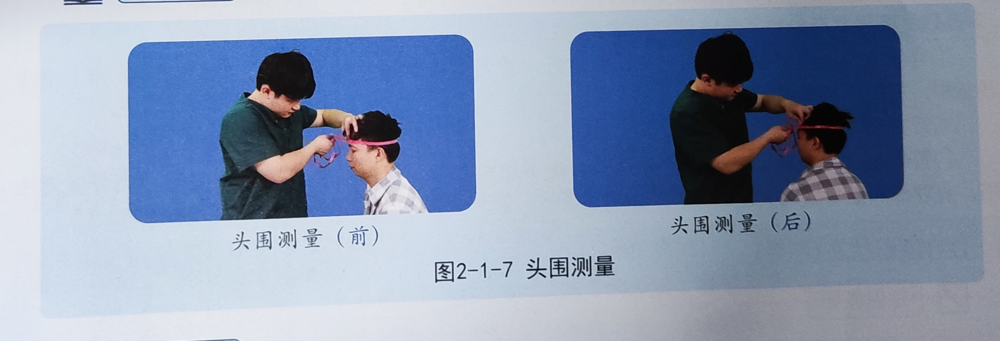

一般检查
概述
前期 （准备阶段）
操作 （做检查）
结束 （报结果）
拿分点：体温、脉搏、呼吸频率、血压（水银式血压计使用，声音变化不好听）、身高、体重、头围测量、淋巴结触诊（颈部淋巴结触诊、锁骨上淋巴结触诊）
选择性拿分点： 未详细列入的部分
一、全身状况检查
主要为生命征/生命体征（体温、脉搏、呼吸频率、血压）、发育（身高、体重、头围）；
体型、意识状态、面容、体位、姿势、步态（了解即可）
1、体温（T）
腋测法 （常考）
步骤一
（1）考生准备：考生穿白大褂、戴帽子、口罩、洗手消毒
（2）物品准备：取体温计，观察体温计（读数）、有无破损，高于35℃则需要甩至35℃以下
（3）告知患者：位于右侧，告知被检者，取坐位或仰卧位，测量前安静休息30分钟，向患者说明原因，取得配合
（4）考生用手触摸被检者腋窝，看有无汗液（有则用毛巾或纸巾擦干），有无致热或降温物品（有则移走）
步骤二
（1）将体温计头端置于被测者腋窝深处并让其夹紧上臂，观察10分钟
（2）到时间，取出体温计，读数，将体温计横置，平视读数（三棱可水平旋转读数）
步骤三
协助被测量者整理衣物，告知被检者体温测量结束；
向患者讲述其体温结果（具体数值），是否属于正常体温；
向考官报告
考场真题
测体温（腋测法，须口述测量时间，报告体温数，2分）
考官可能提问
① 发热的分度？
② 腋测法为什么要擦干腋窝？
③ 使用体温计后怎么消毒？
用75%酒精或含氯消毒剂浸泡消毒
④口测法、肛测法适用于哪些人？
表1 体温测量的方法
| 类型 | 步骤 | 正常体温范围 |
|---|---|---|
| 口测法 | 体温计置于舌下，闭口，5分钟后读数（不能用于婴幼儿或神志不清者） | 36.3-37.2℃ |
| 肛测法 | 被检者取侧卧位，将肛门体温计涂润滑油缓缓插入肛门，深度达体温计长度的一半，5分钟后读数 （多用于婴幼儿或神志不清者） | 36.5-37.7℃ |
| 腋测法 | 测量前被检查者应安静休息并擦干腋窝，移走附近冷热源，将体温计置于腋窝深处，夹紧上臂，10分钟后读数 | 36-37℃ |
表2 发热分度（口测法）
| 类型 | 范围 |
|---|---|
| 低热 | ≤ 38℃ |
| 中热 | ≤ 39℃ |
| 高热 | ≤ 41℃ |
| 超高热 | ＞ 41℃ |
2、脉搏（P）
桡动脉首选，备选肱动脉、股动脉及颈动脉
步骤一
(1) 考生准备：穿白大褂、戴帽子、口罩、洗手消毒；
(2) 物品准备：计时器、脉枕；
(3) 告知患者：检查者位于被检者右侧，测量前安静休息30分钟
步骤二
(1) 示、中、环三指并拢，指腹置于被检者腕部桡动脉处，以适当压力触诊桡动脉搏动；
(2) 对侧原则，即两侧触诊。左手检测被检者右侧桡动脉，右手检测被检者左侧桡动脉，单侧触诊至少30秒。
步骤三
(1) 被检者（整理衣物、告知结果），该被检查者脉搏为75次/分，在正常范围，双侧对称，节律规整、脉搏有力、弹性良好，无水冲脉、奇脉（无异常脉象）。
(2) 报告考官，该被检查者结果
考场真题
测脉率（腕部，需口述检查时间，报告检查结果，2分）
考官可能提问
①什么是心动过速？什么是心动过缓？
心动过速：成人脉搏＞100次/分；
心动过缓：成人脉搏＜60次/分；
②为什么测脉搏不能用拇指？
拇指本身有动脉搏动，容易和患者脉搏混淆，造成误差。
③为什么脉搏不齐要数满1分钟？
节律不齐时，30秒×2，会存在误差
④脉搏和心率一定相等吗？
不一定，例如房颤时会出现脉搏短绌（通常与心率失常有关）
⑤什么是脉搏短绌？常见于什么病？
脉搏短绌（Pulse Deficit）又称绌脉，指的是在单位时间内，脉率少于心率的情况。这种现象通常发生在心脏收缩力不均匀的情况下，导致每次心室收缩时泵出的血液量不足以引起外周动脉的搏动。
脉搏短绌常见于心房颤动、早搏等心律失常疾病。
⑥奇脉常见于什么病？
吸气时脉搏明显减弱或消失，常见于心包积液、缩窄性心包炎、重症哮喘。
⑦水冲脉常见于什么病？
脉搏骤起骤落，急促有力。常见于主动脉瓣关闭不全、甲亢、动脉导管未闭。
3、呼吸频率（R）
步骤一
(1) 考生准备：穿白大褂、戴帽子、口罩、洗手消毒，防止交叉感染；
(2) 物品准备：计时器；
(3) 告知患者：检查者位于被检者右侧，嘱被检查取仰卧位，充分暴露检查部位（即胸部），测量前安静休息30分钟
步骤二
(1) 观察胸部或腹部（腹壁）的起伏变化，一起一伏算一次，计呼吸的次数，至少30秒；
步骤三
(1) 被检者（整理衣物、告知结果），该被检查者（男性以腹式呼吸为主，女性以胸式呼吸为主）,呼吸频率为15次/分，节律规整，幅度正常，胸廓对称，呼吸正常。
(2) 报告考官，该被检查者结果
考场真题
测呼吸频率（须口述检查时间，报告检查结果,1.5分）
考官可能提问
①正常成人的呼吸频率？
②呼吸过速？呼吸过缓？
呼吸过速＞20次/分
呼吸过缓＜12次/分
③呼吸节律异常有哪些？
潮式呼吸、间停呼吸、叹气样呼吸等
④三凹征是？提示什么？
胸骨上窝、锁骨上窝、肋间隙凹陷。
提示呼吸道梗阻，常见于COPD患者
⑤为什么呼吸不能让患者知道？
患者会刻意控制呼吸，导致结果不准确
| 呼吸异常类型 | 特点 | 病因 |
|---|---|---|
| 呼吸停止 | 呼吸运动消失 | 见于心脏骤停 |
| Biots呼吸（间停呼吸） | 表现为规则呼吸后，突然出现一段时间的呼吸停止，然后又开始呼吸，具有间断停止的特点 | 见于颅内压增高、药物引起的呼吸抑制及大脑损害 |
| Cheyne-Stokes呼吸（潮式呼吸） | 呼吸由浅变为深快然后再由深快转为浅慢，随之出现一段呼吸暂停后，又开始上述周期变化 | 见于药物引起的呼吸抑制，心力衰竭以及脑皮质损伤（脑炎、脑膜炎、、颅内压增高） |
| Kussmaul呼吸（库氏曼呼吸） | 呼吸深快 | 见于代谢性酸中毒（如糖尿病酮症酸中毒、尿毒症等） |
4、血压测量（BP）
** 其中的难点在于听肱动脉搏动声，观察水银柱**
步骤一（准备）
（1）考生准备：戴帽子、口罩、洗手消毒，防止交叉感染，用手焐热听诊器（人文关怀）
（2）物品准备：血压计，听诊器
（3）告知患者：右侧，测量前了解被检查者半小时内是否禁烟、咖啡、排空膀胱、非剧烈运动，安静状态下休息至少5分钟
步骤二 （操作）
（1）血压计的检查： 打开血压计开关（左开，右倾45°关），检查血压计是否在0点（若未在0点表明血压计有问题），检查袖带、气囊（有无漏气）
（2）被检查者：取坐位或仰卧位，肘部需保持与心脏同一水平，上肢裸露，伸直并轻度外展
（3）绑袖带：绑在右上臂，其下缘在肘窝以上2-3cm，气囊管（中侧），可容1指（松紧度）
（4）听诊器：触诊肘部（内侧），找到肱动脉位置，将听诊器置于该处（注：听诊器不得与听诊器接触，即塞于袖下），听肱动脉搏动音
（5）充气：边充气边听诊，听到肱动脉搏动声消失后，再让水银柱上升20-30mmHg (双眼平视水银柱进行观察)
（6）放气：缓慢放气，水银柱下降速度约为2-6mmHg/秒，待听到第一声搏动音时——收缩压，待声音消失后——舒张压

步骤三（结果报告、物品整理）
（1） 取下袖带，帮助患者整理衣物，告知检查结束，收缩压124mmHg，舒张压78mmHg，在正常值范围内
（2） 整理血压计，右倾，待水银柱完全回归底部盒子中去后，关闭血压计（往右），规整完袖带、气囊等
（3）汇报考官，要求测量2次（取平均值），此处血压测量结果
考场真题
测量血压（间接测量法，须报告测量结果，5分）
考官可能提问
①成人正常血压、高血压、低血压？
② 为什么测右上肢？左右差多少正常？
右上肢解剖学原因，通常偏高，正常差5-10mmHg
③袖带为什么要距肘窝2-3cm？
避免压迫听诊器，影响肱动脉血流、保证测量结果准确
④充气到肱动脉搏动消失后为何再升20-30mmHg？
确保完全阻断血流，避免收缩压读数偏低
⑤放气速度为什么要慢？
太快易漏读收缩压、低估舒张压
⑥ 为什么要测两次？间隔是多久？
为了减少误差，间隔1-2分钟
⑦ 脉压是什么？正常范围？
脉压=收缩压-舒张压；正常范围30-40mmHg
⑧血压计使用后为什么要倾斜45°后关闭？
让水银完全回到底部槽内，防止泄漏，损坏血压计，保证刻度准确
血压版水平分类（内科学第八）
| 类型 | 收缩压 | 舒张压 |
|---|---|---|
| 低血压 | ＜90 | ＜60 |
| 正常值 | ＜120 | ＜80 |
| 正常高值血压 | 120-139 | 80-89 |
| 1级高血压（轻度） | 140-159 | 90-99 |
| 2级高血压（中度） | 160-179 | 100-109 |
| 3级高血压（高度） | ≥180 | ≥110 |
| 单纯性收缩期高血压 | ≥140 | ＜90 |
补充知识点
①遇到高血压或者两侧肱动脉搏动不一致，测量四肢血压；测24小时血压
②直接测量法一般用于危重症，动脉穿刺后直接测出动脉内动力。
5、体重测量（kg）
步骤一*（准备）
（1）考生准备：戴帽子、口罩、洗手消毒，防止交叉感染，
（2）物品准备：体重称（一般为身高体重测量是集成在同一仪器上），仪器检查确保处于0位
（3）告知被检者：检查者位于其右侧，脱鞋、脱去外套，仅着单衣
步骤二 （操作）
被检查者自然平稳站立于体重称中央（身高体重测量仪上），身体直立，读数
步骤三
（1）告知被检查者检查结束，协助其将脱掉的外套、鞋子等穿上（协助其整理衣物），告知其结果（单位为Kg，精确到到小数点后1位）
（2）体重归放原位
（3）向考官汇报
考场真题
测量体重（须报告结果，2分）
6、身高测量（cm）
步骤一*（准备）
（1）考生准备：戴帽子、口罩、洗手消毒，防止交叉感染，
（2）物品准备：身高体重测量仪
（3）告知被检者：检查者位于其右侧，脱鞋、脱去帽子等
步骤二 （操作）
（1）站：被检查者背靠站立于身高体重测量仪上，身体直立，枕部、臀部、足跟（三点一线），平视前方，靠近测量仪立柱
（2）读：头顶最高点与测量仪立柱垂直线的交叉点即为身高读数；

步骤三
(1) 告知被检查者检查结束，协助其整理衣物，告知其结果（单位为cm，精确到到小数点后1位）
(2) 身高体重测量仪放回原位
(3) 向考官汇报
考场真题
测量身高（须报告结果，2分）
BMI范围
| 类型 | 范围值 |
|---|---|
| 消瘦 | ＜18.5 |
| 正常 | 18.5-23.9 |
| 超重 | 24.0=27.9 |
| 肥胖 | ≥28 |
7、头围测量（cm）
步骤一（准备）
（1）考生准备：戴帽子、口罩、洗手消毒，防止交叉感染;
（2）物品准备：软尺
（3）告知被检者：检查者位于其右侧，脱去帽子，被检查者取坐位或立位
步骤二 （操作）
用软尺，从被检者双侧眉弓上缘绕到颅后通过枕骨粗隆部，围成一圈

步骤三
(1) 告知被检查者检查结束，协助其整理衣物，告知其结果（单位为cm，精确到到小数点后1位）
(2) 软尺放回原位
(3) 向考官汇报
考场真题
测量头围（须报告结果，2分）
8、补充知识点（这部分一般不考）
（1） 腹围测量
步骤一*（准备）
① 考生准备：戴帽子、口罩、洗手消毒，防止交叉感染;
② 物品准备：软尺
③ 告知被检者：检查者位于其右侧，空腹、排空膀胱，腹部放松，可取站位或仰卧位
步骤二 （操作）
用软尺，经被检查者脐部水平环绕腹部一周。（软尺紧贴皮肤但不压迫）读数
步骤三
① 告知被检查者检查结束，协助其整理衣物，告知其结果（单位为cm，精确到到小数点后1位）
② 软尺放回原位
③ 向考官汇报
（2） 体型
测量胸廓部的腹上角
| 类型 | 体型特点 | 腹上角角度 | 对应人群 |
|---|---|---|---|
| 正力型 | 体型匀称 | 约为90° | 正常人 |
| 无力型 | 体型瘦长 | ＜90° | 肺结核等慢性消耗性疾病 |
| 超力型 | 体型矮胖 | ＞90° | 矮胖者 |
（3）营养状态
通常是观察皮下脂肪充实程度
综合判断： 被检者，精神状态良好， 皮肤有光泽、弹性正常，皮下脂肪适中，肌肉充实，无水肿、无消瘦、无皮下结节，BMI在正常范围，营养状态为良好。
二、皮肤检查
主要为皮肤弹性、水肿检查；
颜色、湿度与出汗、皮疹、出血点和紫癜、蜘蛛痣、毛发、其他（了解即可）
1、皮肤弹性检查
简述： 取手背（或上臂内侧皮肤），提起，观察皱褶平复情况。
步骤一（准备）
（1）考生准备：戴帽子、口罩、洗手消毒，防止交叉感染;
（2）告知被检者：检查者位于其右侧，被检查者取坐位或仰卧位，充分暴露检查部位（一般选取手背或上臂内侧）
步骤二 （操作）
（1）用拇指和示指，将手背（上臂内侧皮肤）提起，然后松开，观察皮肤恢复状况
（2）在对侧同样进行此项操作，两侧对比检查
步骤三 （结果报告）
（1）被检者：协助被检查者整理衣物，告知检查结束，检查结果 （譬如，皮肤弹性正常）
（2）考官
弹性正常：皮肤皱褶迅速平复；
弹性下降：皮肤皱褶平复缓慢（见于老年人、消耗性疾病、严重脱水；
弹性增加：发热时血液循环加速，周围血管充盈可导致。
考场真题
皮肤弹性（须口述检查部分，1分）
2、皮肤水肿检查
步骤一（准备）
（1）考生准备：戴帽子、口罩、洗手消毒，防止交叉感染;
（2）告知被检者：知情同意，检查者位于其右侧，被检查者取坐位或仰卧位，充分暴露检查部位（可选下肢足背、踝部或胫前，一般选取胫骨前内侧皮肤）
步骤二 （操作）
（1）用手指按压胫骨前内侧皮肤，3-5秒后松开，观察按压部位皮肤有无凹陷及凹陷深度
（2）在对侧同样进行此项操作，两侧对比检查
步骤三 （结果报告）
(1) 告知被检查者检查结束，协助其整理衣物，告知其结果（无皮肤水肿）
(2) 向考官汇报
考场真题
皮肤水肿（须口述检查部分，1分）
知识点补充
凹陷性水肿：用拇指按压被检查部位皮肤，出现凹痕；
非凹陷性水肿（黏液性水肿——甲减）：用拇指按压被检查部位皮肤，无凹痕；
| 水肿分度 | 具体表现 |
|---|---|
| 轻度 | 仅见于眼睑、胫骨前和踝部水肿，指压后组织出现凹陷，平复较快 |
| 中度 | 全身疏松组织均可见水肿，指压后出现明显或较深组织凹陷，平复缓慢 |
| 重度 | 全身组织严重水肿，皮肤发亮甚至有液体渗出，并有浆膜腔积液 |
- 皮肤检查
（1） 视诊： 观察全身皮肤有无苍白、发红、黄染（包括巩膜）、发绀；查看有无皮疹、皮下出血点、蜘蛛痣、色素沉着或瘢痕；
（2） 触诊：检查皮肤温湿度情况可用手掌章面触摸胸前或前臂内侧皮肤，感受其温度；检查皮肤弹性情况可捏手背或上臂内侧皮肤，松手观察皱褶平复速度；检查有无皮下结节以及压痛可用三指在前臂、上臂或躯干滑行触诊； 检查有无水肿可用指腹按压小腿前或踝部皮肤，若触摸感觉组织偏硬、肿胀、紧绷，压之不凹即为非凹陷性水肿，松开后凹陷持续不恢复则为凹陷性水肿。以上均可对比触诊。
（3）协助被检查者穿衣，整理物品，洗手
（4）结果判定：报告考官，该检查者皮肤颜色正常、巩膜无黄染，无皮疹、无皮下出血点、无蜘蛛痣、无色素沉着、无瘢痕，皮肤温度适中、弹性良好、无皮下结节、无水肿。报告完毕！
考官常问问题
① 皮肤弹性减退常见于什么情况？
老年人、营养不良、严重脱水、慢性消耗性疾病
② 皮下出血如何分度？
| 分度 | 范围 |
|---|---|
| 瘀点 | ＜2mm |
| 紫癜 | 2-5mm |
| 瘀斑 | ＞5mm |
| ③ 蜘蛛痣怎么检查？常见部位？ | |
| 用棉签压迫中心，放射状小血管消失，松开后复原，常见于面、颈、前胸、手背； | |
| ④ 蜘蛛痣常见于什么病？ | |
| 肝硬化、慢性肝炎，也可见于妊娠女性； | |
| ⑤ 皮疹和皮下出血怎么鉴别？ | |
| 皮疹按压可褪色，皮下出血按压不褪色 | |
| ⑥ 黄染主要看哪里？ | |
| 巩膜、皮肤、黏膜 |
三、淋巴结检查【难度系数：⭐⭐⭐】
正常人浅表淋巴结很小，直径多在0.5cm以内，表面光滑、柔软，与周围组织无粘连，无压痛。
一般检查顺序： 耳前，耳后，枕，颌下，颏下，颈前，颈后，腋窝（腋尖群，中央群，肩胛下群，外侧群），滑车上，腹股沟，腘窝
浅表淋巴结检查触及淋巴结异常时应描述部位、大小、质地、数量、活动度、有无粘连、压痛、局部皮肤有无红肿、瘘管等
（一）、头部淋巴结触诊
历年真题: 只考颈部淋巴结触诊、锁骨上淋巴结触诊）
1、颈部淋巴节触诊
步骤一（前）
（1）考生准备：戴帽子、口罩、洗手消毒
（2）被检查者：被检者取坐位或仰卧位，检查者位于其前方，嘱咐被检查头偏向检查侧（让其局部放松，便于检查）
步骤二（操作）
（1）颈前淋巴结： 位于胸锁乳头肌表面及下颌角处
（2）颈后淋巴结： 位于斜方肌前缘
（3）三指（示、中、环），指腹紧贴检查部位皮肤，由浅及深滑动触诊（双侧检查，便于进行对比）
步骤三（结果报告）
其他类似之前
未触及淋巴结肿大，质地软，无压痛（须询问患者），活动度尚可，与周围组织无粘连，局部皮肤无红肿和瘘管形成【正常人】
报告检查结果须描述的内容：
（1） 是否触及淋巴结
（2） 淋巴结肿大须描述： 部位、数目、大小、质地、活动度、压痛、局部皮肤有无红肿和瘘管形成
考场真题
颈前、颈后淋巴结触诊（须报告检查结果，淋巴结肿大须描述相关内容，4分）
2、锁骨上淋巴结触诊
步骤一
（1）考生准备：戴帽子、口罩、洗手消毒
（2）被检查者：被检者取坐位或仰卧位，检查者位于其前方，嘱咐被检查头偏向检查侧（让其局部放松，便于检查）（头部稍向前屈）
步骤二（操作）
（1）三指（示、中、环），指腹紧贴锁骨上窝检查部位的皮肤（锁骨与胸锁乳突肌所形成的夹角）
（2）由浅及深滑动触诊（双侧检查，便于进行对比）
步骤三（结果报告）
类似于颈部淋巴结触诊
考场真题
锁骨上淋巴结检查（须报告检查结果，淋巴结肿大须描述相关内容，4分）
（二）、腋窝淋巴结触诊
检查腋窝时，面对被检查者，检查者应一手将被检查者前臂稍稍抬起外展（右手触诊被检查者左腋窝，左手则相反）
检查顺序： 腋尖，中央，胸肌，肩胛下，外侧
步骤一
（1）考生准备：戴帽子、口罩、洗手消毒
（2）被检查者：被检者取坐位或仰卧位，检查者位于其前方
步骤二（操作）
（1）三指（示、中、环），滑动触诊相关部位（注意顺序：腋尖，中央，胸肌，肩胛下，外侧 ）
（2）由浅及深滑动触诊（双侧检查，便于进行对比）
步骤三（结果报告）
类似于颈部淋巴结触诊
考场真题
锁骨上淋巴结检查（须口述检查内容，须报告检查结果，淋巴结肿大须描述相关内容，7分）
（三）、滑车上淋巴结触诊
步骤一
（1）考生准备：戴帽子、口罩、洗手消毒
（2）被检查者：被检者取坐位或仰卧位，检查者位于其右侧
步骤二（操作）
（1）三指（示、中、环），滑动触诊相关部位（检查右手时，右手托右臂，左手则进行滑动触诊；检查左手则反之）
（2）由浅及深滑动触诊（双侧检查，便于进行对比）
步骤三（结果报告）
类似于颈部淋巴结触诊
考场真题
滑车上淋巴结检查（须报告检查结果，淋巴结肿大须描述相关内容，3分）
（四）、腹股沟淋巴结触诊
步骤一
（1）考生准备：戴帽子、口罩、洗手消毒
（2）被检查者：被检者取坐位或仰卧位，大腿自然伸直，检查者位于其右侧，
步骤二（操作）
（1）三指（示、中、环），滑动触诊相关部位（先上群，即水平组；再下群，即垂直组）
（2）由浅及深滑动触诊（双侧检查，便于进行对比）
步骤三（结果报告）
类似于颈部淋巴结触诊
考场真题
腹股沟淋巴结检查（须报告检查结果，淋巴结肿大须描述相关内容，4分）
转载请注明来源，欢迎对文章中的引用来源进行考证，欢迎指出任何有错误或不够清晰的表达。也可以邮件至 771192805@qq.com